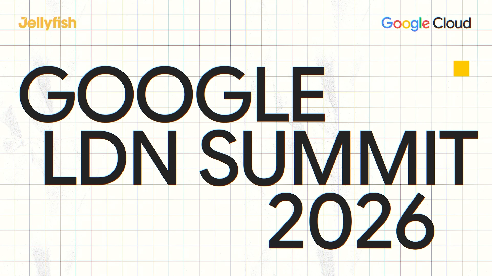
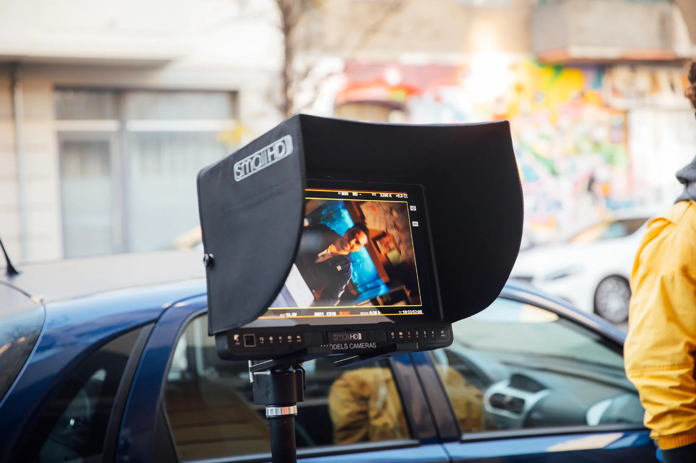
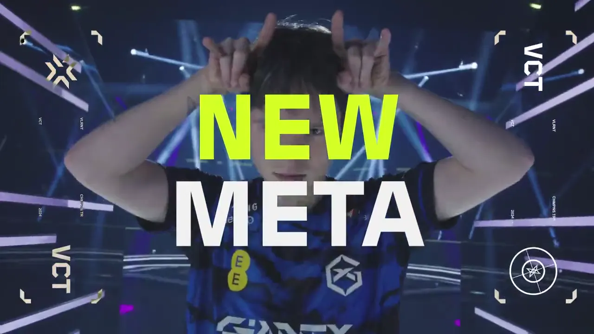
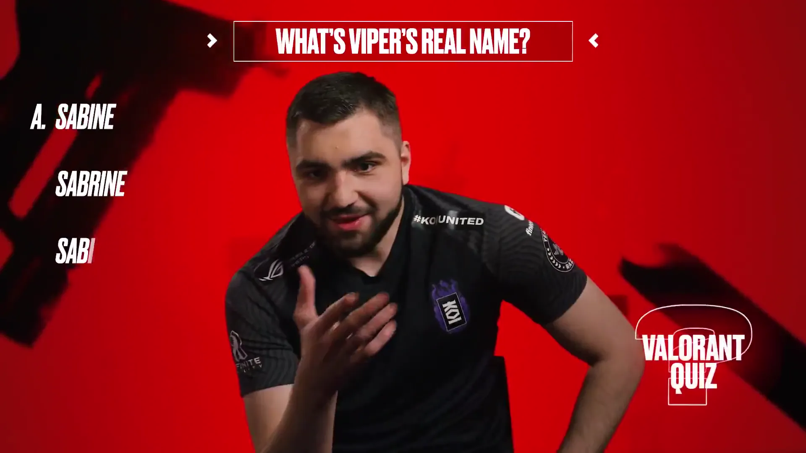
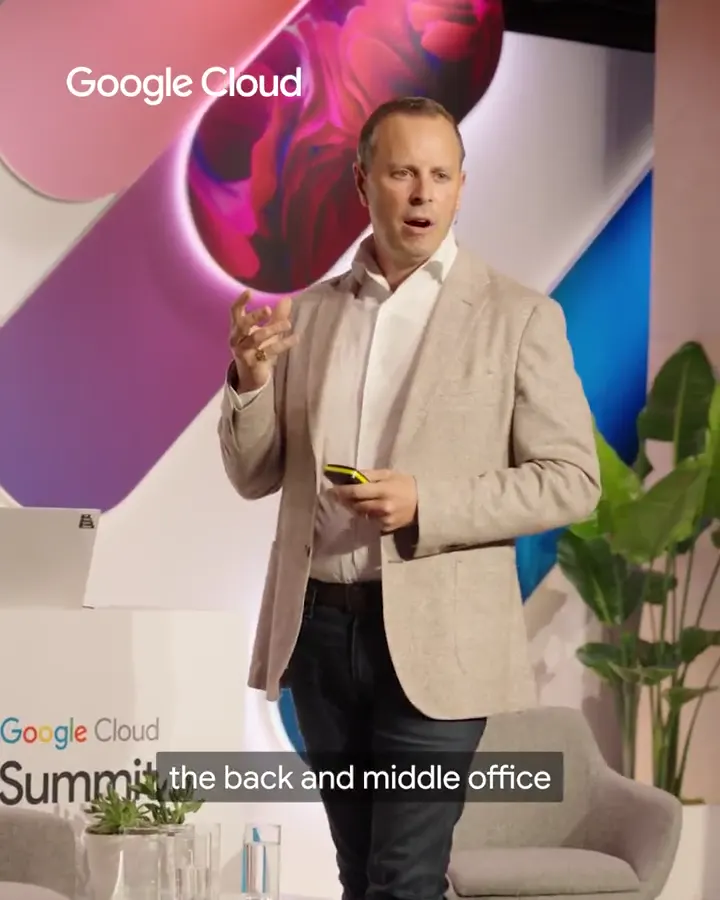

01/04London Summit · VCT EMEA

- Channel and platform strategy
- Owned, earned and paid planning
- Audience and cultural insight
- KPIs, reporting and optimisation
London

I lead social-first creative work: the strategy behind it, the idea at the centre of it, the content that carries it, and the numbers that show whether it worked.
I spent twelve years building my own audience as a creator before I ran social for anyone else. Since then I've led social for G2 Esports, set the EMEA social and creative strategy for VALORANT Esports at Riot Games, and carried that work on at Edelman across nine markets.
Today I'm Social Content Manager at Jellyfish, where I lead social content on the Google Cloud account: turning complex technology into content that executives, engineers and broader audiences actually stop for, and running the Luminary Programme, which keeps Google Cloud leaders visible on LinkedIn.
The through-line is the same in B2B and B2C. Find the cultural moment a brand has a right to be in, build one idea strong enough to travel across platforms and markets, make each version feel native to where it lands, then measure honestly and make the next one better.




Start with the audience, not the asset. Find the cultural moment the brand has a right to be in, build one idea strong enough to flex across markets and platforms, then make each version feel native to where it lands. Measure what matters, tell people the truth, and make the next one better.
15+
Years in social, content and community
4.1M
Earned impressions, Google Cloud London Summit 2026
100K
TikTok followers in VCT EMEA's first year on the platform
2021
Esports Creative Piece of the Year, G2 Esports × adidas